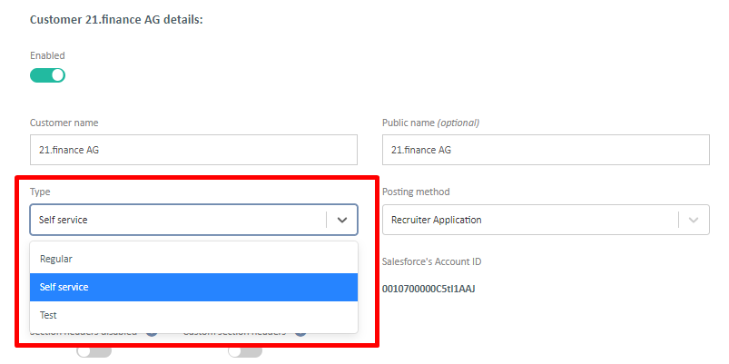

Creating a new Self-Service customer on behalf of the partner
This process allows you, as an admin to allow partners requesting the usage of the basic posting form for customers with more than 10 credits (any types of credits, including GFP).
If the customer purchased less than 10 credits per CP they should proceed with the import themselves by logging in as a partner.
For local credits:
If you allow to use Self-Service for more than 10 credits, go to Salesforce and change the 'posting method' field of the CP into 'Self-Service'; once done, the partner will be able to import this customer (or add this CP to an existing SS customer) himself
IMPORTANT: this is only possible for NON-USED CPs; if there is a used CP, go to the procedure about GFP credits)
For GFP credits:
- If you allow to use Self-Service for GFP credits, go to Salesforce and ensure that the 'posting method' is 'FlashPost Regular' (all CPs of the contract has to be FP Regular, even if there are CPs that were already imported as Self-Service)
- If this is an existing customer with an existing wallet, in FP:
- Change the customer from SeSe to Regular
- Change the wallet type from SeSe to Salesforce Imported
- If new customer, or if changes above done, import the credits and follow the standard procedure
- DO NOT delegate the channels; once customer/wallet is created via the import, create 'email override' channels manually (unless Infojobs, OCC, Appcast)
- Go back to the customer and change the type into 'Self-Service' 
IMPORTANT: If this process was used for importing partially used CP with local jobs, the partner still needs to create a PO for the remaining credits as local jobs will not be part of the monthly PO! In case there are only LOCAL jobs in the wallet, you should change the wallet type into 'Self-Service' for further upsells